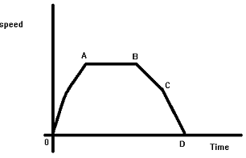

- Reduction factor f in illumination is
Reuction factor, f in illumination is defined as ratio of MSCP to that of MHCP.
MSCP : Mean spherical candle power, and MHCP : Mean hemispherical candle power. - In illumination what is lamp efficiency?
Lamp efficiency = lumens /watt which is the ratio of luminous flux to the power intake.
- What gases are used for TIG welding?
In TIG (tungsten inert gas) welding all these gases are used as shielding gas to avoid atmospheric contamination of the molten weld pool.
- In speed time curve of train what stage comes after free running?
Constituents of speed time curve is
1. Initial acceleration.
2. Constant speed / free running.
3. Coasting.
4. Retardation / braking. - Metadyne control method is employed in which traction system?
Metadyne control system is used in underground traction system. This method is used whenever control of DC motor is required.
- 25 KV, 50 Hz, 1 - Φ is used for supplying power to the locomotives throughout India except which zone?
In West zone 1500 V DC is used instead of 25 KV, 50 Hz ac .
- RTT stands for
RTT is round trip time which is the average time required by each lift in taking a full load of passengers from ground floor, discharging them various upper floors and coming back to ground floor for fresh trip. Waiting interval T = RTT / N, N = no. of lift.
- Inverse square law and Lambert’s cosine law are laws of
Inverse square law : Illumination of a surface receiving its flux from a point. Source is inversely proportional to square of distance between surface and source.
Lambert's cosine law : Illumination of a surface at any point is proportional to cosine of the angle between the normal at any point. and direction of luminous flux. - Main traction systems in India are
Electrical, diesel and steam engine locomotives are used in India.
- Long distance railways use which of the following?
Long distance Railways use 25 KV single phase AC. Long distance operating speed is high acceleration and braking periods are less important.
- MHCP stands for
In illumination technology M.H.C.P stands for mean horizontal candle power. It is the mean of the candle powers in all directions in the horizontal plane containing the source of light.
- In arc heating, the electrodes used are made up of
On the application of high voltage across an air gap, the air in the gap gets ionized under the influence of electrostatic forces and becomes conducting medium. Current flows in the form of a continuous spark, called the arc. When electrodes are made of graphite, then
1. These electrodes are obtained by heating the carbon electrodes to a very high temperature.
2. Owing to lower resistivity of graphite ( one fourth that of carbon), graphite is required half in size for the same electric current resulting in easy replacement.
3. Graphite begins to oxidize at about 600°C whereas carbon at about 400°C. Under average conditions the consumption of graphite electrodes is about one half that of carbon electrodes. - The method of heating used for non-conducting materials is
Dielectric heating, also known as electronic heating, is the process in which a high-frequency alternating electric field, or radio wave or microwave electromagnetic radiation heats a dielectric material.
Applications of dielectric heating are plastic welding, plastic preheating, textile drying, wood glue drying and food drying. - Advantages of electric heating is
1. The electric heating system is free from dirt.It is a clean system requiring minimum cost of cleaning.
2. The system does not produce any flue gas. Since no flue gases is produced in electric heating, no provision has to be made for their exit.
3. Simple and accurate temperature control can be made either by manual or fully automatic switches.
4. Electric heating is economical as electric furnaces are cheaper in initial cost as well in maintenance cost.
5. Automatic protection against over electric current or overheating can be provided through suitable switch-gears.
6. Special type of heating can be done very accurately by electric heating system.
7. The overall efficiency or electric heating is much higher.
8. Electric heating is quite safe and responds quickly. - Main property of a heating element is
Main properties of the heating elements are following
1. Specific resistance of the heating element should be very high.
2. Melting point of the material should be high.
3. Material of the heating element should be not be oxidized at the required temperature.
4. Low temperature coefficient. - Major requirements of the motor in the traction system is
Major requirements are
1. High starting torque.
2. Series speed-torque characteristics.
3. Simplicity in speed control.
4. Regenerative braking.
5. Ability for with standing continuous vibration.
6. Well protected against dirt and damp. - The speed - time curve of an electric train is given below.

In above curve OA represents,OA represents acceleration of the train, AB represents free running, BC represents coasting / running with cutoff power and CD represents braking.- In above speed - time curve of a electric train, AB and BC represents
AB represents the constant speed or free running of the train. BC represents the running with power shut off i.e. the motion of the train is being retarded due to the resistances to the motion, the phenomenon is termed as coasting.- Frequency of single phase traction system is
The low frequency i/e. 16.67 Hz is needed in the single phase traction system for obtaining satisfactory motor characteristics. Standard frequencies of single-phase power systems are either 50 or 60 Hz. Special single-phase traction power networks may operate at 16.67 Hz or other frequencies to power electric railways.- How many conductor(s) rails is utilized for the traction system?
Only one conductor rail is utilized for the traction system because track rails are utilized as the return conductor.
Design with
 by SARU TECH
by SARU TECH
www.sarutech.comContent Credited to electrical4u.com
Online Electrical Engineering Study Site
- In above speed - time curve of a electric train, AB and BC represents